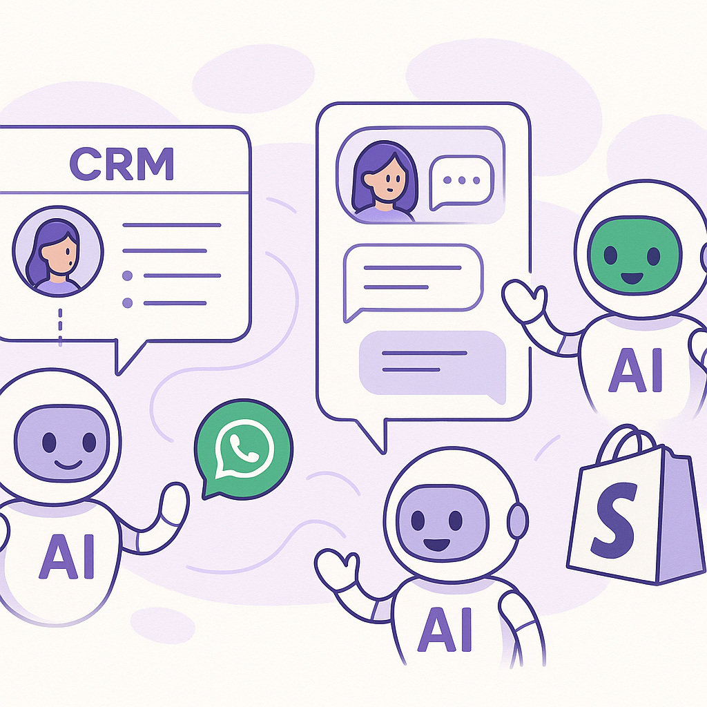
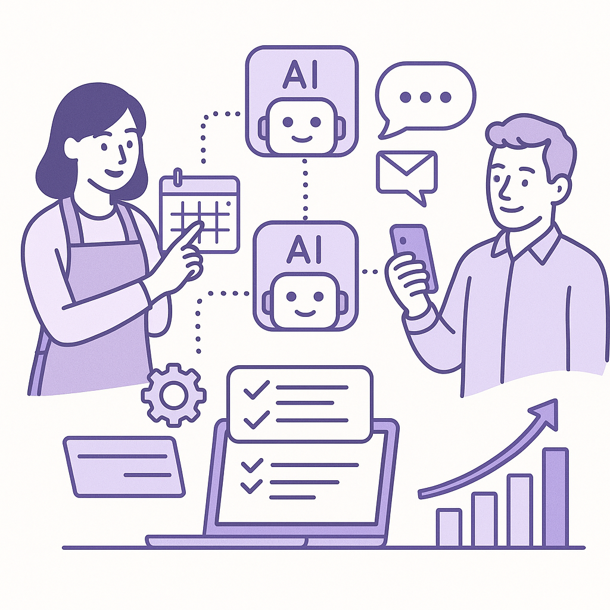
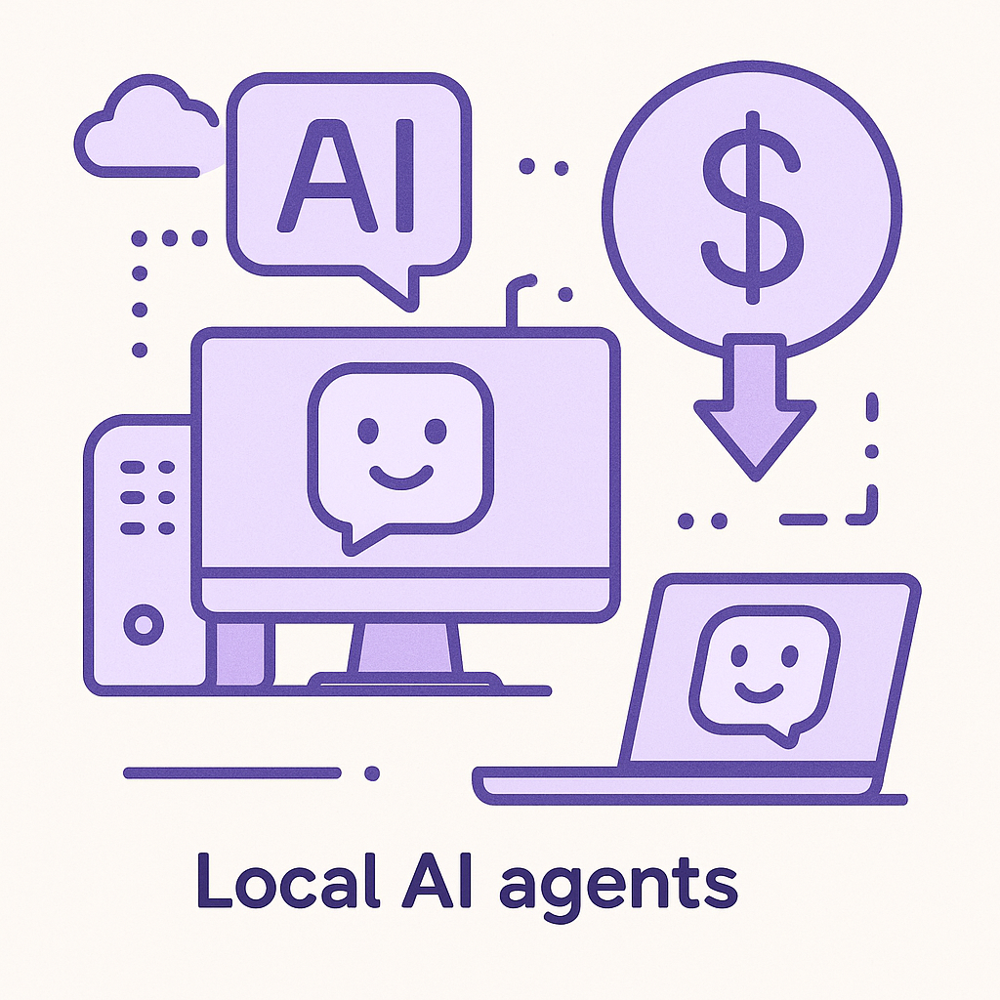
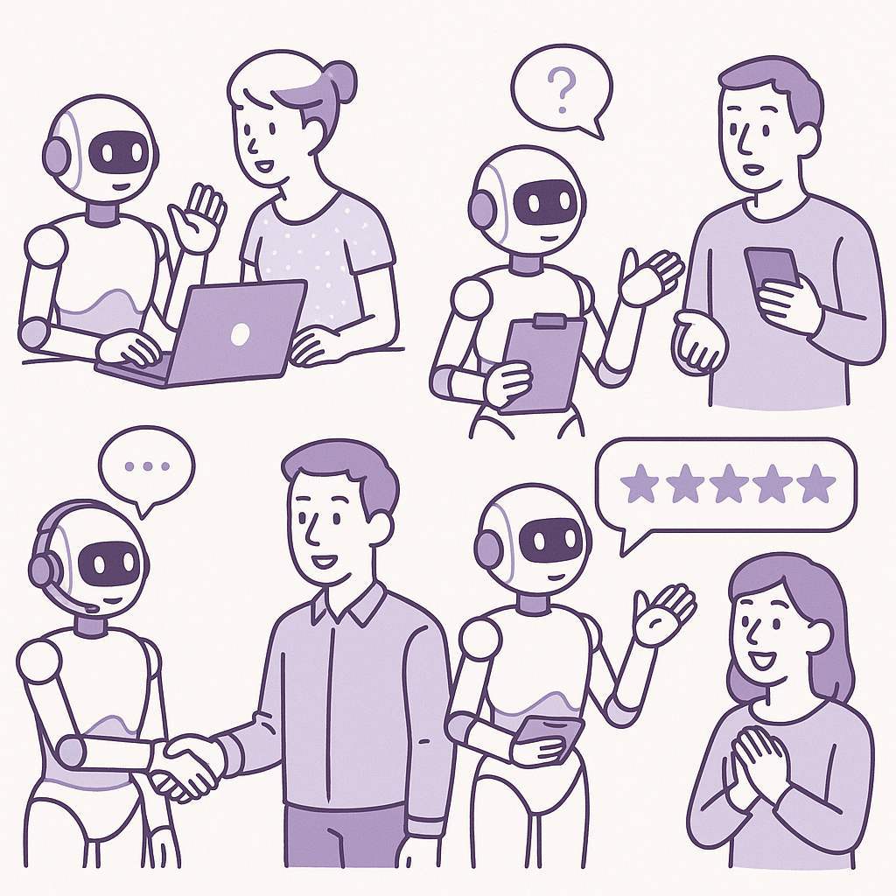

Publishing Recommendation
publishToday's batch of drafted posts effectively connects recent AI trends and product launches to real-world applications in retention marketing. The posts are clear, specific, and practical, offering valuable insights into how AI can enhance CRM strategies and customer engagement. They align well with Purands AI's brand voice by focusing on practical applications and measurable outcomes, avoiding hype and maintaining a conversational tone.
LinkedIn Posts (10)
1. Salesforce launches new Slackbot AI agent ★ Purands solution · high priority
CTA: How are you leveraging AI to enhance customer engagement in your business?

⬇ Download image{kind=link}
Image prompt · isometric-flat
Caption: Embedding AI in CRM strategies enhances customer engagement.
Alternative hooks
- Salesforce's Slackbot AI agent is more than just a chat tool.
- Why is Salesforce's Slackbot AI agent a game-changer for CRM?
- AI in workplace communication: Salesforce takes the lead.
Research behind this post (sources, summaries & confidence)
Salesforce rolls out new Slackbot AI agent as it battles Microsoft and Google in workplace AI conf 0.70 · CRM strategy
Salesforce's new AI agent in Slack could reshape workplace communications and CRM strategies. Its integration can enhance lifecycle messaging and customer engagement, crucial for retention marketing.
Sources & what I took from each
- Salesforce has launched a new Slackbot AI agent.: The VentureBeat source discusses the launch and its implications for competition with Microsoft and Google. ↗ read source
Examples
- Integration of Salesforce's AI Slackbot in company workflows to enhance communication and CRM operations.
Recent news
- Salesforce's ongoing updates and enhancements to its AI capabilities in Slack to compete with other tech giants.
Original trend links
Risks / caveats
- Potential over-reliance on AI for critical communication tasks could lead to issues if the technology fails.
2. Anthropic launches Cowork, a Claude Desktop agent that works in your files — no coding required ★ Purands solution · high priority
CTA: How are you integrating AI into your retention marketing strategy?
Alternative hooks
- Ever wished AI could simplify your data management without the need for coding?
- AI agents are becoming integral to business - but how can they enhance your retention marketing?
- Simplifying AI integration isn't just a trend, it's a necessity for effective retention strategies.
Research behind this post (sources, summaries & confidence)
Anthropic launches Cowork, a Claude Desktop agent that works in your files — no coding required conf 0.60 · AI startups
This development by Anthropic emphasizes the growing trend of AI agents becoming integral to business operations. By allowing a Claude Desktop agent to work within files without coding, it simplifies AI integration, which could significantly enhance retention marketing by streamlining the management of customer data and insights.
Sources & what I took from each
- Anthropic launched Cowork, a Claude Desktop agent.: The source provided (VentureBeat) confirms the launch and describes its functionality. ↗ read source
Examples
- Anthropic's Claude Desktop agent working in business environments to manage customer data without requiring coding skills.
Recent news
- The launch of similar AI products by other companies aiming to simplify AI integration into business operations.
Original trend links
Risks / caveats
- Potential privacy concerns with AI agents accessing and working with sensitive business files.
- Dependence on AI products without understanding their full capabilities and limitations.
3. HoneyBook bets on agentic AI to streamline small business operations with its new Claude connector ★ Purands solution · high priority
CTA: How is your business using AI to enhance customer engagement?

⬇ Download image{kind=link}
Image prompt · isometric-flat
Caption: AI streamlining tasks for small businesses' growth.
Alternative hooks
- Small businesses are increasingly turning to AI to ease operational burdens.
- Imagine if small business tasks like scheduling could run on autopilot.
- Automation isn't just for the big players - small businesses can benefit too.
Research behind this post (sources, summaries & confidence)
HoneyBook bets on agentic AI to streamline small business operations with its new Claude connector conf 0.60 · AI startups
HoneyBook's use of AI agents to streamline operations for small businesses can enhance customer engagement and retention. This reflects a broader trend of democratizing AI tools for smaller enterprises.
Sources & what I took from each
- HoneyBook is using agentic AI for small business operations.: The source discusses HoneyBook's implementation of AI to improve efficiency in small business operations. ↗ read source
Examples
- Small businesses using HoneyBook's AI tools to automate scheduling and client communications.
Recent news
- Increased adoption of AI tools by small businesses looking to improve operational efficiency.
Original trend links
Risks / caveats
- Small businesses may face challenges in integrating and fully utilizing AI tools without proper support.
4. AI integration for enhanced customer interactions ★ Purands solution · high priority
CTA: How do you see AI changing the way we interact with customers?
Alternative hooks
- Imagine your AI agent jumping into a conversation just when it's needed.
- At Purands AI, we've taken contextual understanding to the next level.
- Anthropic's new Claude Tag update is a game-changer for AI in CRM.
Research behind this post (sources, summaries & confidence)
Anthropic’s new Claude Tag update lets its Slack agent read the full conversation — and jump in unprompted conf 0.60 · CRM strategy
This update allows for better contextual understanding in communications, enhancing customer interactions and lifecycle messaging. Such integrations are pivotal for effective retention marketing.
Sources & what I took from each
- Anthropic updated its Slack agent to read full conversations.: The source details the new features of Anthropic's Slack agent and its potential to improve communication. ↗ read source
Examples
- Companies using Slack with Anthropic's update to manage customer interactions more effectively.
Recent news
- Other tech companies releasing similar updates to their communication tools to improve AI integration.
Original trend links
Risks / caveats
- Privacy concerns regarding AI reading and interpreting full conversations without prompts.
5. Listen Labs raises $69M after viral billboard hiring stunt to scale AI customer interviews ★ Purands solution · high priority
CTA: How are you leveraging AI for customer insights?
{kind=link}
Image prompt · isometric-flat
Caption: AI transforms customer data into actionable insights.
Alternative hooks
- Listen Labs raised $69M to boost AI-driven customer insights. Here's why it matters.
- AI isn't just for automation; it's for understanding. Listen Labs' $69M raise proves it.
- What can $69M in AI funding teach us about customer retention?
Research behind this post (sources, summaries & confidence)
Listen Labs raises $69M after viral billboard hiring stunt to scale AI customer interviews conf 0.60 · AI startups
Listen Labs' funding for AI-powered customer interviews highlights the importance of AI in gathering customer insights, which can drive personalized retention marketing strategies.
Sources & what I took from each
- Listen Labs raised $69M to expand AI customer interviews.: The source confirms the funding and describes its focus on AI-driven customer insights. ↗ read source
Examples
- Companies using Listen Labs' AI tools to conduct customer interviews and gather insights.
Recent news
- Similar funding rounds in the AI sector aimed at enhancing customer engagement tools.
Original trend links
Risks / caveats
- Privacy concerns over AI-driven interviews and data collection practices.
6. Stripe agrees to buy OpenRouter as AI model routing expands ★ Purands solution · high priority
CTA: How do you see AI model routing changing retention marketing in your business?
Alternative hooks
- Stripe's latest move in AI: acquiring OpenRouter for model routing.
- Wondering how AI model routing can optimize your CRM?
- AI model routing isn't just hype-Stripe's betting on it.
Research behind this post (sources, summaries & confidence)
Stripe agrees to buy OpenRouter as AI model routing expands conf 0.50 · AI industry
Stripe's acquisition of OpenRouter highlights the importance of AI model routing in optimizing customer data platforms and CRM systems. This can directly impact retention marketing by improving data activation and personalization.
Sources & what I took from each
- Stripe is acquiring OpenRouter for AI model routing.: The acquisition is covered by the source, indicating strategic importance in AI model routing. ↗ read source
Examples
- Stripe's use of OpenRouter to enhance data processing and AI capabilities for better personalization.
Recent news
- Similar acquisitions in the AI space focusing on model routing and data personalization.
Original trend links
Risks / caveats
- Integration challenges post-acquisition could delay or complicate the realization of expected benefits.
7. Perplexity partners with Nvidia to launch Portable Computer, a fully local AI agent with zero token costs
CTA: How do you see zero token cost AI impacting your business strategy?

⬇ Download image{kind=link}
Image prompt · isometric-flat
Caption: Local AI agents reduce operational costs.
Alternative hooks
- An AI agent with zero token costs could change the game.
- Imagine slashing AI costs with a local agent.
- Perplexity and Nvidia take AI local - here's why it matters.
Research behind this post (sources, summaries & confidence)
Perplexity partners with Nvidia to launch Portable Computer, a fully local AI agent with zero token costs conf 0.70 · AI startups
Perplexity's partnership with Nvidia to offer a local AI agent could reduce operational costs for businesses, making AI-powered retention strategies more accessible.
Sources & what I took from each
- Perplexity and Nvidia launched a local AI agent with zero token costs.: The VentureBeat article confirms the launch and discusses its implications for cost reduction and accessibility. ↗ read source
Examples
- Businesses adopting Perplexity's local AI agent to reduce costs associated with cloud-based solutions.
Recent news
- Similar partnerships between AI companies and hardware manufacturers to offer cost-effective solutions.
Original trend links
Risks / caveats
- Potential limitations in the capabilities of local AI agents compared to cloud-based counterparts.
8. Agentic AI in government just hit the hard part: deciding what a machine may decide
CTA: How do you think businesses should handle AI decision-making boundaries?
Alternative hooks
- Governments are now wrestling with a question that was once the realm of sci-fi.
- What decisions should a machine make? Governments are starting to answer this.
- AI decision-making in government just reached a new level of complexity.
Research behind this post (sources, summaries & confidence)
Agentic AI in government just hit the hard part: deciding what a machine may decide conf 0.60 · AI industry
As governments grapple with AI decision-making boundaries, similar considerations apply in business, especially in customer data platforms and CRM systems where AI plays a role in decision-making processes.
Sources & what I took from each
- Governments are facing challenges in defining AI decision-making boundaries.: The source discusses the complexities of AI governance and decision-making in governmental contexts. ↗ read source
Examples
- Businesses reevaluating AI governance policies to align with emerging regulations.
Recent news
- Global discussions on AI ethics and governance shaping policy frameworks.
Original trend links
Risks / caveats
- Inconsistent regulations across regions could complicate AI deployment for multinational companies.
9. Railway secures $100 million to challenge AWS with AI-native cloud infrastructure
CTA: How do you think specialized cloud solutions will impact AI tool deployment in your field?
Alternative hooks
- Railway just landed $100 million to take on AWS. But here's why it matters.
- What happens when cloud infrastructure goes AI-native? Railway's $100 million bet might have the answer.
- Specialized cloud solutions could change AI deployment. Railway's funding is a glimpse into that future.
Research behind this post (sources, summaries & confidence)
Railway secures $100 million to challenge AWS with AI-native cloud infrastructure conf 0.60 · AI startups
Railway's funding to build AI-native cloud infrastructure indicates a shift towards more specialized cloud solutions, which could enhance the deployment and efficiency of AI-driven retention marketing tools.
Sources & what I took from each
- Railway secured $100 million to develop AI-native cloud infrastructure.: The VentureBeat article confirms the funding and discusses its potential impact on cloud infrastructure. ↗ read source
Examples
- Businesses adopting Railway's AI-native cloud solutions for enhanced AI tool deployment.
Recent news
- Investments in cloud solutions focusing on AI capabilities and infrastructure.
Original trend links
Risks / caveats
- Competition from established players like AWS could impact Railway's market penetration.
10. XPENG IRON humanoid robot draws record physical AI funding
CTA: How do you think humanoid robots will change customer service in the next decade?

⬇ Download image{kind=link}
Image prompt · isometric-flat
Caption: Humanoid robots in customer service roles.
Alternative hooks
- XPENG's humanoid robots have caught the eyes of investors, breaking funding records.
- Could humanoid robots become the future of customer service?
- Record funding for XPENG's AI robots signals a shift in customer engagement.
Research behind this post (sources, summaries & confidence)
XPENG IRON humanoid robot draws record physical AI funding conf 0.50 · AI industry
XPENG's significant funding for its humanoid robot platform indicates strong investor confidence in AI applications. This trend could influence retention marketing by integrating advanced AI into customer service and engagement.
Sources & what I took from each
- XPENG has received record funding for its humanoid robot platform.: The source highlights the funding amount and investor interest in XPENG's robotics platform. ↗ read source
Examples
- XPENG's humanoid robots used in customer service roles to enhance engagement.
Recent news
- Similar investments in AI robotics from other tech companies looking to enhance customer interaction capabilities.
Original trend links
Risks / caveats
- Ethical and operational challenges in deploying humanoid robots in customer-facing roles.
Today's Trends
| # | Trend | Category | Why it matters |
|---|---|---|---|
| 1 | Anthropic launches Cowork, a Claude Desktop agent that works in your files — no coding required
source |
AI startups | This development by Anthropic emphasizes the growing trend of AI agents becoming integral to business operations. By allowing a Claude Desktop agent to work within files without coding, it simplifies AI integration, which could significantly enhance retention marketing by streamlining the management of customer data and insights. |
| 2 | Salesforce rolls out new Slackbot AI agent as it battles Microsoft and Google in workplace AI
source |
CRM strategy | Salesforce's new AI agent in Slack could reshape workplace communications and CRM strategies. Its integration can enhance lifecycle messaging and customer engagement, crucial for retention marketing. |
| 3 | Stripe agrees to buy OpenRouter as AI model routing expands
source |
AI industry | Stripe's acquisition of OpenRouter highlights the importance of AI model routing in optimizing customer data platforms and CRM systems. This can directly impact retention marketing by improving data activation and personalization. |
| 4 | WhatsApp commerce: abandoned cart, replenishment, broadcast best practices | WhatsApp commerce | Optimizing WhatsApp commerce strategies is crucial in APAC, where mobile-first and messaging-first commerce is prevalent. Best practices in abandoned cart and replenishment can significantly boost customer retention. |
| 5 | HoneyBook bets on agentic AI to streamline small business operations with its new Claude connector
source |
AI startups | HoneyBook's use of AI agents to streamline operations for small businesses can enhance customer engagement and retention. This reflects a broader trend of democratizing AI tools for smaller enterprises. |
| 6 | XPENG IRON humanoid robot draws record physical AI funding
source |
AI industry | XPENG's significant funding for its humanoid robot platform indicates strong investor confidence in AI applications. This trend could influence retention marketing by integrating advanced AI into customer service and engagement. |
| 7 | Anthropic’s new Claude Tag update lets its Slack agent read the full conversation — and jump in unprompted
source |
CRM strategy | This update allows for better contextual understanding in communications, enhancing customer interactions and lifecycle messaging. Such integrations are pivotal for effective retention marketing. |
| 8 | Perplexity partners with Nvidia to launch Portable Computer, a fully local AI agent with zero token costs
source |
AI startups | Perplexity's partnership with Nvidia to offer a local AI agent could reduce operational costs for businesses, making AI-powered retention strategies more accessible. |
| 9 | Google just redesigned the search box for the first time in 25 years — here’s why it matters more than you think.
source |
AI industry | Google's redesign of its iconic search box could influence how businesses optimize search and discovery strategies, impacting their customer engagement and retention efforts. |
| 10 | MIT AI forecasts extreme weather without historical data
source |
AI industry | MIT's AI tool for forecasting extreme weather without historical data showcases advancements in AI predictive capabilities, which could enhance data-driven decision making in retention marketing. |
| 11 | Agentic AI in government just hit the hard part: deciding what a machine may decide
source |
AI industry | As governments grapple with AI decision-making boundaries, similar considerations apply in business, especially in customer data platforms and CRM systems where AI plays a role in decision-making processes. |
| 12 | AI data centre regulation just got a template that needs no new law
source |
AI industry | The regulatory landscape for AI data centers is evolving, which could impact how businesses manage and store customer data, crucial for retention marketing strategies. |
| 13 | Listen Labs raises $69M after viral billboard hiring stunt to scale AI customer interviews
source |
AI startups | Listen Labs' funding for AI-powered customer interviews highlights the importance of AI in gathering customer insights, which can drive personalized retention marketing strategies. |
| 14 | Railway secures $100 million to challenge AWS with AI-native cloud infrastructure
source |
AI startups | Railway's funding to build AI-native cloud infrastructure indicates a shift towards more specialized cloud solutions, which could enhance the deployment and efficiency of AI-driven retention marketing tools. |
Risk Assessment
No risks flagged.
Suggested LinkedIn Comments (30)
Open each post, then paste the copied comment. Nothing is posted automatically.
1. insight · rss:techcrunch.com — Before Malone left, OpenAI had already reshuffled its infrastructure org, shifti
Post by: rss:techcrunch.com
Why it works: It highlights the strategic importance of organizational changes in tech firms.
↗ Open LinkedIn post to paste comment2. opinion · rss:techcrunch.com — X has sent cease-and-desist letters to Nitter, the open source project behind pr
Post by: rss:techcrunch.com
Why it works: It provides a perspective on the broader implications of the legal action for privacy and platform control.
↗ Open LinkedIn post to paste comment3. insight · rss:techcrunch.com — Instagram says the process can produce a first pass in under 10 seconds, potenti
Post by: rss:techcrunch.com
Why it works: It connects a technical development to its potential impact on content diversity and user engagement.
↗ Open LinkedIn post to paste comment4. opinion · rss:techcrunch.com — The company's new fundraising total now stands at $232 million.
Post by: rss:techcrunch.com
Why it works: It balances the excitement of fundraising with a cautionary note on sustainable growth.
↗ Open LinkedIn post to paste comment5. insight · rss:techcrunch.com — The company says it will start construction in 2027 and that a Starship rocket c
Post by: rss:techcrunch.com
Why it works: It acknowledges the complexity and long-term vision required for space exploration.
↗ Open LinkedIn post to paste comment6. expansion · rss:techcrunch.com — Each year, we get a huge influx of applicants to speak at TechCrunch’s events, a
Post by: rss:techcrunch.com
Why it works: It expands on the significance of such events for knowledge exchange in the tech community.
↗ Open LinkedIn post to paste comment7. expansion · rss:techcrunch.com — If you’ve been circling around Disrupt, then now’s the best time to lock in your
Post by: rss:techcrunch.com
Why it works: It underscores the broader impact of the event on understanding industry trends.
↗ Open LinkedIn post to paste comment8. insight · rss:techcrunch.com — Anthropic is giving Claude a shared memory across chat and Cowork, so users no l
Post by: rss:techcrunch.com
Why it works: It highlights the practical benefits of the feature for user efficiency and experience.
↗ Open LinkedIn post to paste comment9. insight · rss:techcrunch.com — Germany's autonomous vehicle regulations have made it a hotspot for autonomous v
Post by: rss:techcrunch.com
Why it works: It highlights the role of regulation in fostering technological advancement, using Germany as a case study.
↗ Open LinkedIn post to paste comment10. insight · rss:techcrunch.com — Life360’s new $7.99 scannable pet tags alert families when a lost pet is found a
Post by: rss:techcrunch.com
Why it works: It connects the product to practical benefits for users, showing IoT's value in everyday contexts.
↗ Open LinkedIn post to paste comment11. opinion · rss:www.theverge.com — Garmin just took the wraps off its new line of rugged Fenix 9 smartwatches, with
Post by: rss:www.theverge.com
Why it works: It provides a balanced perspective on innovation versus cost, a common consumer concern.
↗ Open LinkedIn post to paste comment12. respectful challenge · rss:www.theverge.com — In the span of a few hours on Monday, the Department of Homeland Security announ
Post by: rss:www.theverge.com
Why it works: It highlights the potential negative impact of policy on innovation and talent acquisition.
↗ Open LinkedIn post to paste comment13. insight · rss:www.theverge.com — If you watched the Gamescom 2026 announcements, you might have caught a trailer
Post by: rss:www.theverge.com
Why it works: It emphasizes the value of creativity in an industry often focused on graphics and mechanics.
↗ Open LinkedIn post to paste comment14. insight · rss:www.theverge.com — CD Projekt Red is remastering The Witcher 3: Wild Hunt, the hit RPG that first l
Post by: rss:www.theverge.com
Why it works: It acknowledges the opportunity while addressing the importance of execution for consumer trust.
↗ Open LinkedIn post to paste comment15. insight · rss:www.theverge.com — Dreame, the Chinese vacuum company that aspires to be a global technology giant,
Post by: rss:www.theverge.com
Why it works: It draws a lesson from the situation, applicable to many tech ventures.
↗ Open LinkedIn post to paste comment16. insight · rss:www.theverge.com — The new Designed for Xbox 25th Anniversary collection features a handful of limi
Post by: rss:www.theverge.com
Why it works: It highlights the strategic use of nostalgia in brand marketing, relevant to tech marketing trends.
↗ Open LinkedIn post to paste comment17. insight · rss:www.theverge.com — Bose may be best known for its QuietComfort headphones, but the brand’s Bluetoot
Post by: rss:www.theverge.com
Why it works: It connects a pricing strategy with consumer behavior and brand loyalty, offering a business perspective.
↗ Open LinkedIn post to paste comment18. expansion · rss:www.theverge.com — The Geoff Keighley-hosted Opening Night Live event at Gamescom just wrapped up.
Post by: rss:www.theverge.com
Why it works: It broadens the focus from one game to the industry's diversity, appealing to varied gamer interests.
↗ Open LinkedIn post to paste comment19. insight · rss:www.theverge.com — Instagram is launching a new Reels-editing feature that automatically trims your
Post by: rss:www.theverge.com
Why it works: It ties a new feature to user engagement, a critical success factor for social platforms.
↗ Open LinkedIn post to paste comment20. insight · rss:www.theverge.com — With the new design of Nothing OS 5.0, app icons and widgets can use adaptive co
Post by: rss:www.theverge.com
Why it works: It connects feature design with user satisfaction, appealing to those in product and UX roles.
↗ Open LinkedIn post to paste comment21. opinion · rss:feeds.arstechnica.com — SpaceX aims to launch Starship from Florida by the end of the year. 2027 seems m
Post by: rss:feeds.arstechnica.com
Why it works: It acknowledges realistic challenges while appreciating SpaceX's role in advancing space tech.
↗ Open LinkedIn post to paste comment22. insight · rss:feeds.arstechnica.com — Record-breaking robot races are less substantial than household chore challenges
Post by: rss:feeds.arstechnica.com
Why it works: It contrasts entertainment with practical utility, adding depth to the original claim.
↗ Open LinkedIn post to paste comment23. expansion · rss:feeds.arstechnica.com — Understanding unique photochemistry of such materials will help in conservation,
Post by: rss:feeds.arstechnica.com
Why it works: It connects scientific research to cultural preservation, illustrating broader implications.
↗ Open LinkedIn post to paste comment24. insight · rss:feeds.arstechnica.com — It's currently only appearing on Pixels running Android 17.
Post by: rss:feeds.arstechnica.com
Why it works: It highlights strategic product management, adding context to the post's observation.
↗ Open LinkedIn post to paste comment25. opinion · rss:feeds.arstechnica.com — "[P]eople are not familiar with this disease and don’t fully understand the pote
Post by: rss:feeds.arstechnica.com
Why it works: It emphasizes the importance of education in public health, bringing a proactive angle.
↗ Open LinkedIn post to paste comment26. insight · rss:feeds.arstechnica.com — "This will be a project like no other."
Post by: rss:feeds.arstechnica.com
Why it works: It underscores the value of novel challenges, aligning with the project's unique nature.
↗ Open LinkedIn post to paste comment27. opinion · rss:feeds.arstechnica.com — Image changes that would get a paper retracted are widespread among suppliers.
Post by: rss:feeds.arstechnica.com
Why it works: It takes a firm stance on research integrity, reinforcing the need for robust checks.
↗ Open LinkedIn post to paste comment28. insight · rss:feeds.arstechnica.com — Privilege escalation attack grants "full control" and freedom from Meta's server
Post by: rss:feeds.arstechnica.com
Why it works: It contextualizes the issue within broader cybersecurity trends, emphasizing importance.
↗ Open LinkedIn post to paste comment29. respectful challenge · rss:feeds.arstechnica.com — A pioneering AI scientist once predicted computers would replace human radiologi
Post by: rss:feeds.arstechnica.com
Why it works: It provides a balanced perspective on AI's role, countering unrealistic expectations.
↗ Open LinkedIn post to paste comment30. expansion · rss:feeds.arstechnica.com — Folks have been daisy-chaining Macs for AI—this refresh keeps that in mind.
Post by: rss:feeds.arstechnica.com
Why it works: It highlights user innovation and adaptability, broadening the discussion on tech use.
↗ Open LinkedIn post to paste comment